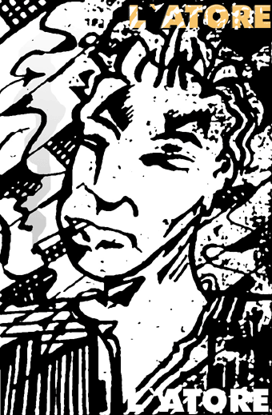

 |
EL ACTOR La carne
se extendía tolenda por el horizonte de parqué. En el calendario
luminoso las fechas sonreían socarronamente como si quisieran parecer
históricas; el humo de la estancia rompía la unidad y la
concentración psíquica de los no-fumadores; el ventilador
paraba y recomenzaba una y otra vez su movimiento lento y pegajoso... |